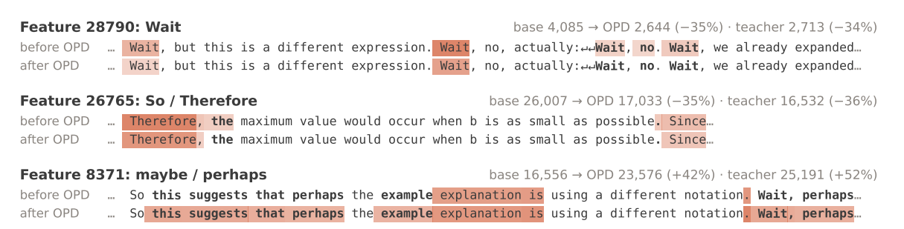
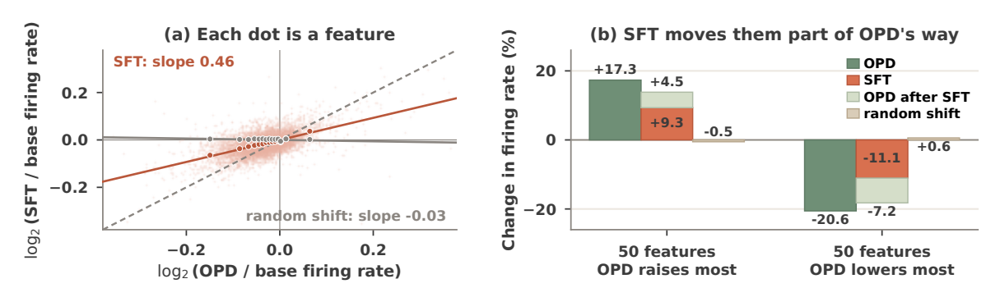

Understanding On-Policy Distillation：学生学到的是新特征，还是已有特征的新用法？
Understanding On-Policy Distillation：学生学到的是新特征，还是已有特征的新用法？
最值得记住的四点：
- 作者在三个数学 OPD 设置中没有测到新增或消失的特征，主要变化是已有共享特征的使用频率；这是一组特定测量条件下的结果，不是“OPD 不可能学到新知识”的证明。
- 真正的方法贡献是 swap readout：把同一个学生 checkpoint 的激活同时填入 crosscoder 的两个学生槽，避免把编码器分槽的歧义误当成模型差异。
- 在变化最明显的设置里，
Wait、Hmm、So等推理转折词相关特征变化突出；但这一现象并非三个教师设置都成立。 - 教师轨迹 SFT warm-up 的部分作用可通过在线移植特征变化恢复，反向移除又会削弱收益。这是比“特征频率相关”更强的证据，也是本文最有价值的实验。
1. 背景与材料
Zichao Yu、Qianshuo Ye、Xu Wang、Difan Zou；香港大学、剑桥大学、深圳河套学院。本文为 2026-09-28 的 arXiv v1 预印本。
本笔记依据全文及附录 B–E，核对了方法推导、实验设置和图表；未运行作者代码或复现实验。下文图片从该版本 PDF 裁切，保留图号来源。
2. 从一个真实例子看问题：模型少“Wait”了，究竟学到了什么？
Figure 7 给出一段反复出现 Wait 的推理文本。同一段文字送进蒸馏前后的学生，特征 28790 在一些位置仍激活，在另一些位置不再激活。整个 held-out 集上，它的触发次数由 4,085 降至 2,644，接近教师的 2,713。

来源：原文 Figure 7，p.20。看同一行文字前后的着色，而非把它误读为两次生成结果：输入没变，变化的是内部特征何时触发。另两行展示结论词和犹豫表达相关特征。
OPD 让学生自己生成轨迹，再让冻结的教师在这些前缀上提供逐 token 的分布信号。正确率提高不能告诉我们：学生获得了新的内部计算成分，还是更恰当地调用原来就有的成分？同样，Wait 少了也不能直接等同于“反思能力下降”——表面词、该词附近的特征和真正的反思计算不是一回事。
普通 sparse crosscoder 能把多个模型放进同一个特征字典，却只输出一份联合稀疏编码。于是，上面这个例子遇到一个测量难题：特征亮了，到底是蒸馏前学生、蒸馏后学生还是教师让它亮的？
3. 方法：先修好读出，再讨论模型学到了什么
3.1 Crosscoder 学习共同坐标，但不直接给每个模型独立读数
设蒸馏前学生、蒸馏后学生、教师分别为 $B,O,T$。三个模型读取同一 token 前缀，提取中间层 residual stream 激活 $h_m$。Crosscoder 训练编码器、偏置和各模型的解码器：
目标是重建各模型激活；$z_j$ 是特征强度，$D_m$ 的第 $j$ 列是该特征在模型 $m$ 中的方向。本文采用 BatchTopK，训练时平均每 token 保留 50 个特征，推理时用训练估计的阈值。这样避开 $\ell_1$ 稀疏惩罚可能把共享特征误判为模型特有特征的问题，但并不保证字典完整。
作者还用 MAS 衡量各模型在一个特征上的解码器份额：先将每个解码方向的 $\ell_1$ 范数除以隐藏维度平方根，再对模型归一化。三模型平分时为 $1/3$，大于 0.5 称该模型占主导。它描述方向的归属，不等于该模型在某个输入上实际用了多少这个特征。
3.2 为什么不把其他学生槽清空？
令 $S=W_B+W_O$，$N=(W_B-W_O)/2$。编码器的学生部分可以写成：
训练前后学生很相似，激活差异只有其平均激活范数的 7–12%。因此训练充分约束了 $S$，对 $N$ 的约束却弱；$N$ 保留大量随机初始化成分。若只用 $W_Bh_B$，就把这个不可靠的 $N$ 施加到完整激活上。Table 4 中，该读出与 swap 的活跃特征集合 Jaccard 只有 0.27–0.34。这不是可忽略的实现细节。
3.3 Swap：把待测学生同时填进两个学生槽
对任意学生 checkpoint $s$，先把激活缩放到基准学生的平均范数，再计算：
同一输入上更换 checkpoint 后，非线性之前的差异恰好为：
不确定的 $N$ 消掉了，固定教师项也在差分中消掉了。注意：教师仍然决定 token 相关的偏置和跨阈值位置；这不是一个完全不依赖教师的学生编码器。
回到 Wait 案例，数据流是：同一段文本 → 各 checkpoint 的中层激活 → 同一 crosscoder 的双槽读出 → 比较特征 28790 在哪些位置越过阈值 → 汇总触发次数。词本身没有删改，训练模型的参数也没有被读出过程修改。
使用冻结字典读出训练时未见的 warm-up checkpoint，其解释方差仍与已见 checkpoint 接近（Qwen3 设置为 0.755–0.760，Appendix C.4），支持这套读出可以跨 checkpoint 使用。这个重建结果验证了适用性，但不是对全部模型计算的完备性证明。
4. 实验设置：哪些变量真的被比较了？
| 分析 | 学生与教师 | 训练与测量 |
|---|---|---|
| 三组 OPD | 同一 R1-Distill-Qwen-1.5B 学生；教师分别为 JustRL-DeepSeek-1.5B、Skywork-OR1-Math-7B、R1-Distill-Qwen-7B | DAPO-Math-17k，一个 epoch、279 步；64 prompts × 4 rollouts/步 |
| warm-up | Qwen3-1.7B-Base → Qwen3-4B-Base-GRPO 教师 | 从教师轨迹筛出 704 个正确示例；LoRA rank/alpha 均 32，175 步后合并，再做同配方 OPD |
| crosscoder | 每个比较训练共同字典 | 32,768 个特征；400M tokens 池，OpenThoughts 与 RedPajama 各半；约 3M held-out tokens 统计特征 |
OPD 全参数更新，学习率 $10^{-6}$；信号为学生到教师的 reverse KL，按学生 top-16 token 近似，不加入 outcome reward。分析层为学生第 14 个 block 输出（从 0 计数），Qwen3-4B 教师用第 18 个 block。它们是单个中层比较，不是全模型逐层追踪。（Appendix C）
评测为 AIME24、AIME25、AMC23，分别 30、30、40 题。avg@n 是每题 n 次采样的平均正确率，不是至少答对一次的 pass@n；总 Avg. 对三个 benchmark 等权平均。主文三教师实验使用 avg@256，warm-up 使用 avg@8。
5. 证据链：从“没测到新特征”到“部分收益可被移植”
5.1 三教师实验支持重加权，但没有证明能力上限不变
| 教师设置 | 学生 OPD 后 avg@256 | 教师 avg@256 | 频繁特征中，变化落在 Figure 3 稳定带内的比例 |
|---|---|---|---|
| JustRL | 56.6% | 60.5% | 98.2% |
| Skywork | 49.4% | 71.1% | 99.6% |
| R1-7B | 43.5% | 62.0% | 99.4% |
基准学生均为 41.6%；来源：Table 6、Figure 3。正文将稳定带表述为变化小于 20%，Appendix D.1 更精确地写作倍率至多 1.2。频繁特征要求两 checkpoint 合计触发至少 100 次。
作者用两条互补证据判断“没有新增”：没有 OPD 学生占主导的特征；在同一 held-out 数据上，没有特征满足“一边至少触发 10 次、另一边从不触发”的 gained/lost 标准。两个 7B 教师分别有 42、30 个 teacher-dominant 特征，但学生在这些特征上的平均 MAS 前后均为 0.19。（§3.1）
这支持的是：在当前层、字典、数据和阈值下，变化主要落在已有特征的使用上。 频率大致不变也不代表计算没变：逐 token 的活跃集合仍有约 8–12% 的差异。本文没有直接测 pass@K 的能力边界；引言对该边界的讨论引用了其他工作，不应把它当成本文额外完成的实验。
5.2 最显著变化偏向推理转折词，但要保留反例
JustRL 的 top-50 变化特征中，12% 与 decision tokens 相关，远高于所有特征中的 0.4%；Skywork 为 4%，R1-7B 为 0%。这些词被分为反思、犹豫、推进三类。特征标签按最强激活上下文判定，不是预先证明的功能模块。（Figure 4、Appendix D.2）
在 JustRL 中，Wait 和一类 So/Therefore 特征下降约 35%，maybe/perhaps 上升 42%，方向与教师一致。相应 decision-token 生成步骤的师生 KL 是平均步骤的 3.0–3.6 倍。这里的 KL 是教师到学生的分析指标，不要与训练所用 reverse KL 混淆。
这说明训练信号、输出分布变化和内部特征变化在这些位置相互对应；没有单独干预这些词相关特征来证明它们解释正确率提升。而 R1-7B 整体变化很小，恰好限制了“OPD 总是在重塑反思”的叙述。
5.3 Warm-up 既提前完成一部分 OPD，也引入 OPD 没有的变化
Qwen3 设置中，基础学生、warm-up 单独、直接 OPD、warm-up + OPD 的 avg@8 分别为 9.7%、18.9%、17.6%、22.0%，教师为 36.3%。（Table 7）值得注意的是，仅 warm-up 已经超过直接 OPD；不能把整个增益都归给后续在线训练。
作者另训成对 crosscoder，并用冻结三模型字典读出 warm-up checkpoint，仍未发现新增特征。这里 warm-up 是同任务、同一 OPD 教师的正确轨迹 SFT；不能外推为任意 SFT 都不产生新特征。（§4.1）
对 8,524 个足够频繁的特征，把相对基础学生的触发次数对数变化组成向量 $o$（OPD）与 $s$（warm-up），过原点拟合：
$\beta=0.46$ 表示 warm-up 在 OPD 方向上已推进近一半；它不是“解释了 46% 准确率收益”。随机旋转同幅度激活变化后，斜率为 −0.03，说明并非任意扰动都会产生这种对齐。

来源：原文 Figure 6，p.8。左图看实际 warm-up 与随机扰动的斜率差异；右图看 warm-up 已经推动 OPD 最明显升降的特征，后续 OPD 再补上一段变化。
另一方面，剔除一个几乎被 warm-up 关闭的乱码字符特征后，正交残差仍占 $\|s\|_2^2$ 的 56%；保留它则为 77%。这是平方范数份额，不是特征数量比例。该残差在后续 OPD 后仍保留，前后残差的 Spearman 相关为 0.69。强变化涉及对话边界、答案格式、推理风格和数学符号。（§4.2、Appendix D.3）
5.4 最强实验：把 warm-up 的变化加过去，再减回来
每个生成位置，让基础学生、warm-up 学生和教师读取当前同一前缀。计算两个学生的 swap code 差，经 OPD 学生解码器投回 residual stream：
$s_O$ 是该槽归一化的缩放因子，还需按目标学生平均范数调整。将变化加到直接 OPD 学生的 block 14 输出，或从 warm-up + OPD 学生减去；模型权重不变，下游层继续运行。使用原激活加上编码差值的解码结果，避免直接把原激活整体替换成有重建误差的 $Dz$。（Appendix D.4）
| 条件 | avg@8 | 相对本组未干预的变化及 95% bootstrap 区间 |
|---|---|---|
| 直接 OPD | 18.6% | — |
| 加入 warm-up 特征变化 | 21.3% | +2.7 pp [ +0.5, +6.0 ] |
| 加入打乱特征身份的变化 | 15.9% | −2.7 pp [ −5.4, +0.3 ] |
| warm-up + OPD | 21.9% | — |
| 移除 warm-up 特征变化 | 19.2% | −2.7 pp [ −5.3, −0.4 ] |
| 移除打乱特征身份的变化 | 23.4% | +1.5 pp [ −0.8, +4.1 ] |
来源：Table 3。此表最大生成长度为 8,192，主评测为 31,744；因此两表基线不同，不能交叉相减。置信区间以题为单位 bootstrap 2,000 次，不代表训练随机种子不确定性。
恢复与移除均有效，打乱特征身份没有相应的显著效果，支持这组特征变化确实承载了 warm-up 的部分行为收益。但提升并非每个 benchmark 都成立：直接 OPD 加干预时，AIME25 从 7.5% 降到 7.1%，总体提升主要由 AMC23 推动。
6. 我的判断：最该复用的是测量与干预设计
第一，swap readout 比“没有新能力”这个口号更稳固。 编码器分槽不可辨识性有推导、数值诊断和未见 checkpoint 重建作支撑。若要比较相近 checkpoint，应优先检查这一问题。不过教师项只在非线性前的差分中取消，仍值得替换或移除教师偏置做敏感性实验，确认特征频率结论不依赖具体阈值环境。
第二，“零新增”是测量下界，不是不存在性的证明。 Crosscoder 只看一个中层，学生解释方差约 0.76–0.82；罕见特征又会被筛除或受 gained/lost 阈值影响。新计算也可能来自已有方向的新组合、跨层连接或时序组织。更有说服力的下一步是跨层、字典容量和稀疏度扫描，并设一个已知引入新概念的阳性对照，先验证探测器能发现变化，再解释零检出。
第三，干预验证了整体变化，不等于找到一个简单可部署的机制。 它每个 token 都根据当前前缀重新调用基础学生、warm-up 学生与教师，传入的是上下文相关的高维变化；并非一个固定向量或少量 Wait 特征。打乱对照的扰动范数为 residual stream 的 4.5%，真实变化为 6.2%，也并非严格等范数。应补充等范数对照、原始激活差移植，以及对话格式／推理风格／数学符号分组干预，才能知道稀疏语义分解带来的额外解释力和最小有效子集。
我会复用本文的 共同字典 → 稳定读出 → 同文本测量 → 双向在线干预 → 特征打乱对照 流程；对“OPD 只能重加权”的普遍结论则保留判断。本文最强的结果是局部可干预的表征解释，不是对所有蒸馏配方的能力定理。
7. 连接
- MOC-Distillation — 从输出匹配转向解释 OPD 与 warm-up 对共享表征的使用变化。
- MOC-Interpretability — 共同字典中的读出歧义，以及从相关统计走向双向干预的证据设计。
- On-Policy-Distillation-在线策略蒸馏 — 可对照基础 OPD 流程，区分训练配方与本文的事后机制分析。